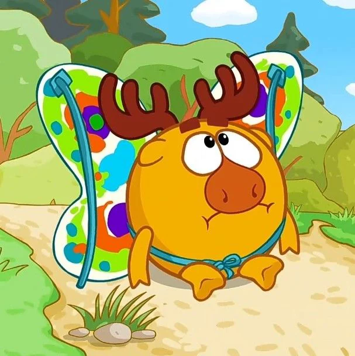
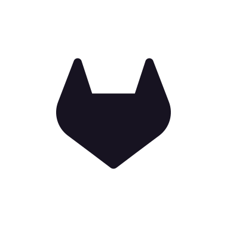
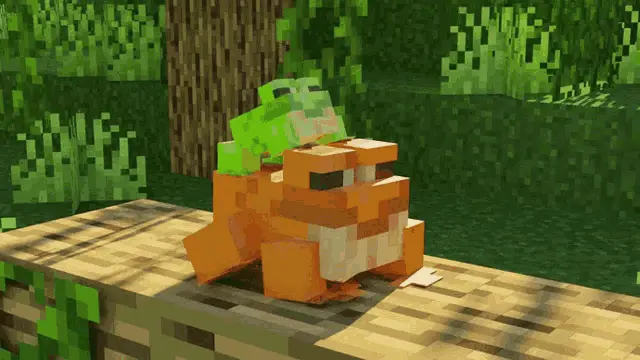

Разные форматы подходят для разных задач. Ниже — примеры основных форматов.

Формат: JPG — идеален для фотографий и сложных изображений с множеством цветов. Поддерживает сжатие с потерями, что даёт маленький размер файла при хорошем качестве. Не подходит для изображений с текстом или прозрачностью.

Формат: WEBP — используйте для скриншотов, логотипов, графики с текстом и изображений, где важна чёткость краёв. Поддерживает прозрачность и сжатие без потерь, но файлы весят больше JPG.

Формат: SVG — векторный формат для логотипов, иконок и иллюстраций. Не теряет качество при масштабировании, имеет маленький размер, можно анимировать CSS/JS. Идеален для адаптивных сайтов.

Формат: GIF — поддерживает простую анимацию, но ограничен 256 цветами. Современная альтернатива: WebP — поддерживает анимацию, прозрачность, сжатие лучше GIF и JPG. WebP рекомендован для новых проектов.